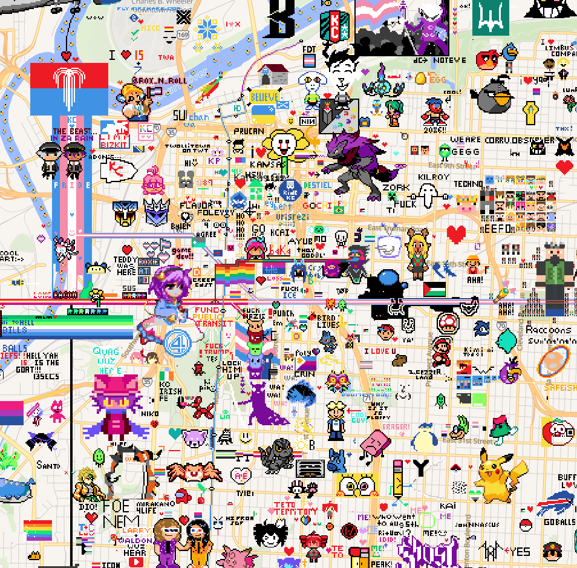
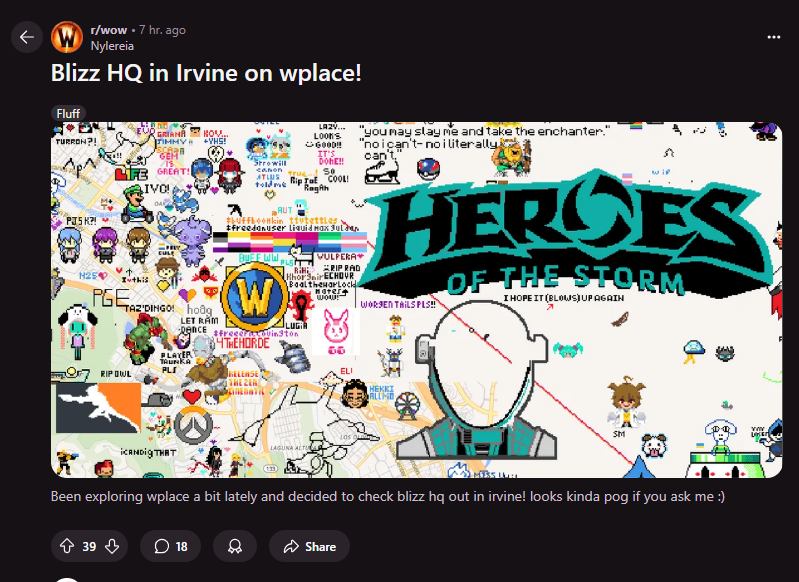

Wplace 付费账：30秒一颗像素的游戏，到底值不值充钱
从电荷机制、升级曲线到付费色与回充加成，把 Wplace 的免费/付费边界拆透——轻度玩家、主力创作者、重度联盟各自该怎么掏这笔钱。
它到底值不值得掏钱？这是我在 Wplace 画布上连续蹲了三周之后，每天睡前都要过一遍的问题。
Wplace官网 这个游戏的核心逻辑一句话就能说清：一张全球同步的像素画布，每颗像素要消耗一颗"电荷"，电荷 30 秒回一颗。免费用户从 30 颗电荷上限起步，画完就等，等够了再画。这个节奏慢得像老式拨号上网，但偏偏就是有几十万玩家同时在线，在同一张地图上涂来涂去。

所以真正的问题不是"要不要为一个像素游戏花钱"——而是"在这个 30 秒节奏的世界里，花钱能买到什么值得的东西"。
先把免费版给什么摆上桌
从下载拿到客户端之后，免费用户能体验到 Wplace 的完整核心玩法：注册账号、进入画布、点击落像素、按住空格连涂、加入或不加入任何联盟。没有时间限制，没有关卡锁，整张画布对你开放。
免费版的硬边界有三条：
第一条是电荷池上限。 初始给 30 颗，每画一颗涨 1 点经验，升级后上限缓慢提升，老玩家能涨到几百——但回充速度永远是 30 秒一颗，上限只解决"存量"不解决"流量"。一个 30 上限的新号，要等 15 分钟才能把池子灌满；一个 300 上限的老号，得等 2.5 小时。
第二条是水滴为零。 水滴是画布的消费货币，可以买付费色值、国旗图案、回充加速。免费玩家升级时每次会收到 500 水滴奖励，这是唯一的免费水滴来源——但如果你想直接买水滴，那就涉及付费了。
第三条是视觉资产。 免费色板够用但不好看，付费色值提供了更多更鲜艳的颜色档位；国旗图案是装饰性的像素头像，纯审美；回充加速则直接触及效率天花板。
说穿了，免费版给的是"完整玩法 + 慢节奏体验"——你能玩到所有核心内容，但得接受它的时间密度。
付费版多了什么：按需求拆成三档
Wplace 的付费不是单一月费或买断，而是一组可独立购买的消费项。我把它分成三档来看：
第一档：小额审美类。 付费色值和国旗图案属于这一档，单次购买、永久持有，价格应该在几块到几十块之间。这一档的本质是"让你的作品更好看"——付费色提供了更精准的色彩选择，国旗图案让你的账号在画布上有辨识度。
第二档：效率类。 回充加速是这一档的核心，按水滴购买或订阅，能缩短电荷的回充间隔。从 30 秒压到更快的速度，直接影响每小时能画多少颗像素。这是主力创作者最关心的一档。
第三档：水滴包。 直接买水滴储备，用于购买以上所有内容。升级奖励是唯一的免费水滴渠道，但如果你想加速采购，就得花钱买水滴。
这个定价结构挺鸡贼的——它不卖给你"解锁全部功能"的捆绑包，而是让你按需买单。审美党只买色值，效率党只买回充，重度联盟玩家可能全都要。好处是你不用为不关心的功能付钱，坏处是你可能在不同档位之间反复横跳，最后算下来花了不少但说不清每笔值不值。
分三类人算一算
算账得对号入座，先把自己归到哪一类搞清楚。
轻度用：每天 15 分钟以内
这一类玩家就是上来随便涂几笔，荒野铺个底色、城市角落补个色块，想起来就玩、想不起来就放。对你们来说，免费版完全够用。
30 颗电荷够画半小时左右的随手涂鸦，用完了放一放，下次打开又满了。升级带来的上限提升在这个使用频率下几乎感觉不到——你还没攒够 30 颗，下次打开就已经满了。
付费值不值？不值。 回充加速省的时间在你的日常节奏里可以忽略，付费色在随手涂鸦里也显不出优势。这一档的读者可以关掉这篇文章了，继续免费玩就行。
主力用：每天 1~3 小时，参与联盟协作
这一类是画布的中坚力量——加入了一个联盟，每天有固定的画图任务，参与大图工程，可能还卷入过几次像素战争。
对你们来说，30 秒回一颗的节奏是明显的瓶颈。画完 30 颗要等 15 分钟，一个 3000 颗的大图按 5 个主力分，每个人也要 600 颗——按 30 秒一颗算，纯回充等待就有 5 小时以上。
回充加速是这一档最该买的。 假设把回充从 30 秒压到 10 秒，每颗省 20 秒，600 颗就能省 200 分钟——这还没算联盟协作时的来回切换和等待队友。按一个月 50 块的订阅算（实际价格以Wplace文档公示为准），每个月省出的画图时间至少多一倍。
付费色值是次选。 大图工程里颜色精度很重要——免费色板的色差有限，可能导致你画的部分和队友接不上。十几块钱的色值能让你在协作里更精准，投入产出比也不错。
水滴包按需补。 如果你已经在联盟里承担了协调角色，偶尔需要水滴加速某个紧急任务，那水滴包值得补一点；如果只是纯画图，升级给的 500 水滴够用好久。

重度用：每天 3 小时以上，主导联盟或战争
这一类玩家已经不是"玩"画布了，是"运营"画布——可能是某个联盟的领袖，手上同时推进几个大图项目，还要处理战争防御、排班调度、新人培训。
对你们来说，花钱不是"值不值"的问题，是"不花钱能不能维持效率"的问题。
回充加速必须拉满，水滴储备必须常备，付费色值和国旗图案不仅是审美，更是团队身份标识——联盟里每个主力的头像和色板都统一过，一眼能认出自己人。
这一档闭眼付。 但有一个关键提醒：别一个人扛。联盟里大家平摊水滴包和回充订阅的成本，人均下来每个月其实没多少。我见过一个 20 人联盟每人每月凑 10 块，总共能买的水滴储备够支撑一次大规模攻防。
不付钱有什么别的路
如果不想花一分钱，还有几个替代思路：
加入联盟换协作效率。 多人共享进度、轮班守图、互相补漏，本质是用"人多力量大"弥补回充速度的慢。代价是你得花时间融入社区、听指挥、承担任务压力。
降低使用频率。 别追求"每天都要画"，改成"每周集中一两天猛干"——电荷池攒满的时间够你周末开一次大图。代价是节奏变慢，追不上热门工程的进度。
利用升级奖励的水滴攒买小额道具。 每次升级给 500 水滴，攒个十来次就能买一个付费色值——但这个"攒"的周期可能要几个月，需要极强的耐心。
老实说，这些替代方案都是"够用但不够爽"。画布的付费设计就是让你在"效率"和"耐心"之间选，中间没有灰色地带。
结论：三秒对号入座
我自己属于主力偏重度的边界——每天两三个小时，在一个中等规模联盟里当执行画图手。最后我选了回充加速 + 一个付费色值，每月总成本控制在五十块以内，算下来每个月多出的画图时间让我能多完成两到三个小图任务，这个账我觉得值。
给三类读者的最终建议：
- 随手玩的，永远不用付。 免费版的完整度足够支撑你每天那十来分钟的快乐。
- 主力创作者，先买回充。 色值其次，水滴按需。先用一周感受一下加速前后的效率差再决定要不要续。
- 重度运营者，闭眼付但别单打独斗。 联盟平摊是成本控制的关键，别一个人扛下所有投入。
最后补一句：Wplace 的付费体系在同类游戏里不算激进——没有强制月费，没有功能锁死，你花多少钱就买多少价值。这一点上它比很多手游厚道多了。但慢节奏的核心体验永远是免费的，这一点也没变。关于 Wplace 的完整资料整理，我在 GitHub、Gitee、GitCode 三个仓库都备份了一份，各取所需。